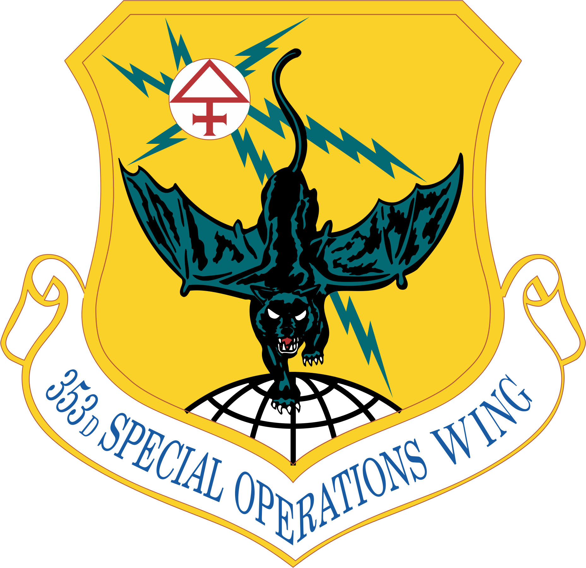
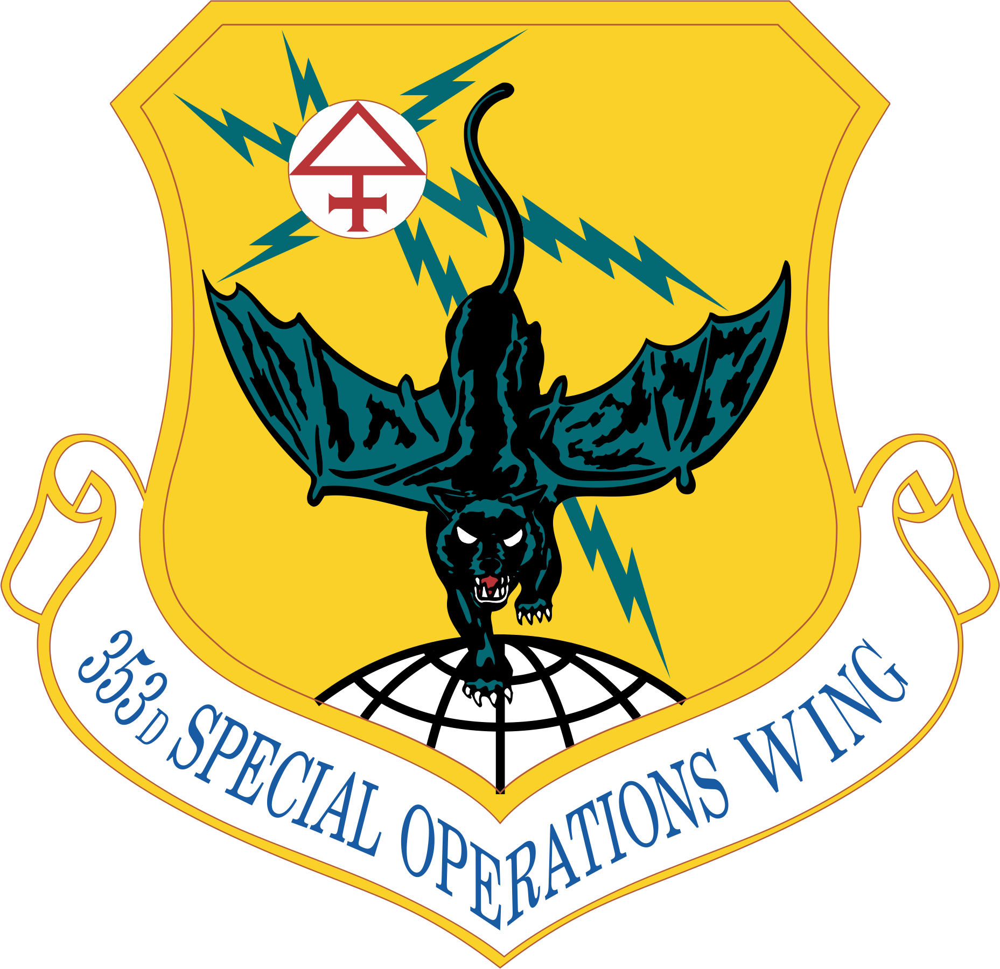
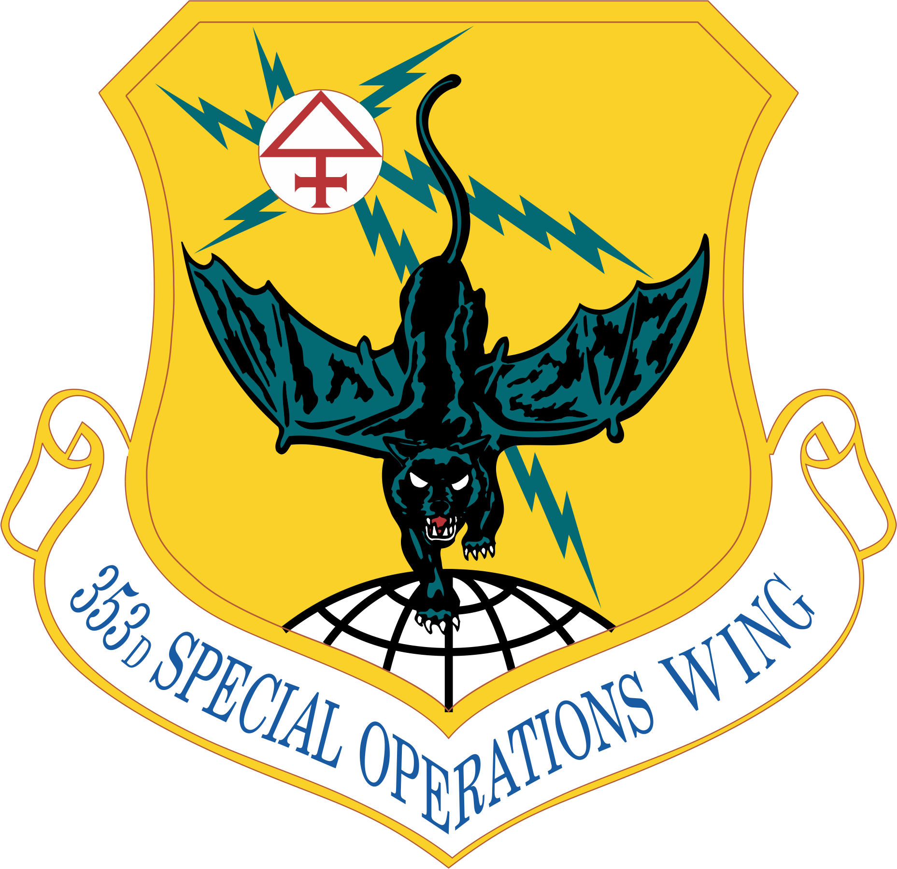
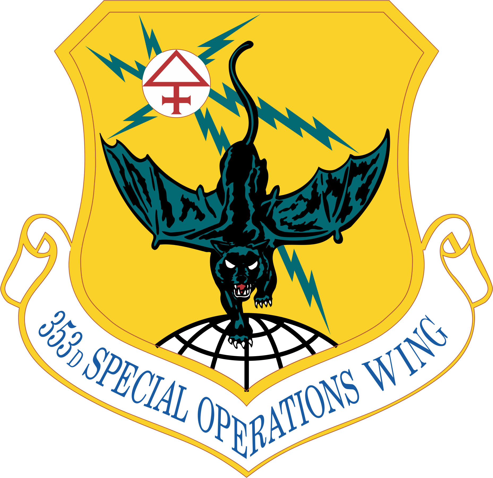

Congrats selectees on your hard work and dedication.

Commander of the Air Force's largest combat wing, provides the Commander, U.S. Indo-Pacific Command, trained and equipped tactical air superiority forces; combat search and rescue forces; command and control platforms; aeromedical evacuation capability; and global mobility resources for contingency operations.

Command Chief Master Sergeant for the largest combat wing in the U.S. Air Force, provides the Commander, U.S. Indo-Pacific Command, trained and equipped tactical air superiority forces; combat search and rescue forces; command and control platforms; aeromedical evacuation capability; and global mobility resources for contingency operations.

Command Chief Master Sergeant for Fifth Air Force. He is responsible to the commander for the operational utilization, readiness, assignment, morale and welfare of 15,000 combat-ready personnel across three main operating bases, delivering combat airpower, command and control, personnel recovery, surveillance and rapid mobility.